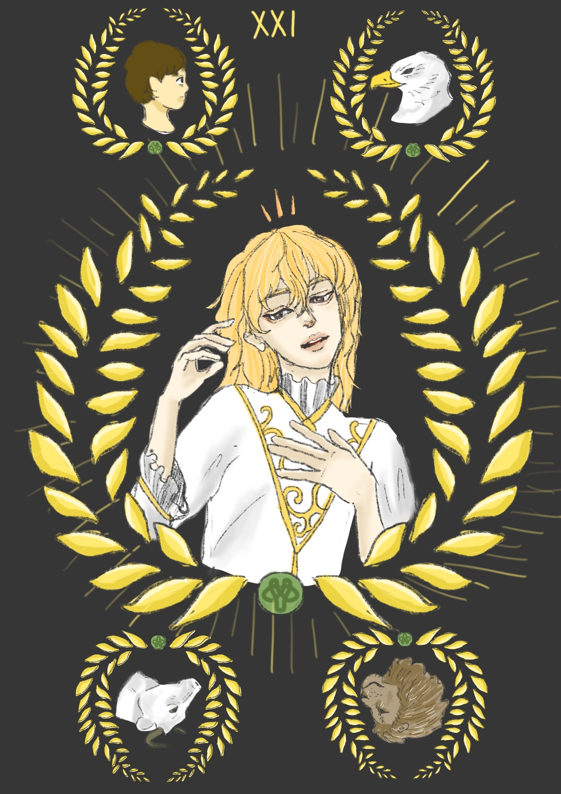

The world
전체가 되는 체험, 전체성, 완결성, 영원성, 복합성, 양성적, 경험적, 후천적, 재창조, 잠재적 능력, 무의식과 의식의 만남, 미묘함, 이상적인 목표
남성과 여성은 생식기관에 한정된 성적인 정체성(正體性) 이상의 것이다. 양성적 존재는 인성에 포함된 잠재적 통합에 대한 이미지이다.
설에 의하면 헤르마프로디토스는 태어날 때부터 양성적 존재이다.
이런 통합에 대한 잠재성은 우리 모두 안에 내재해 있기 때문이다. 그러나 다른 설에 의하면 그의 양성은 후천적인 것이다.
모성적인 보살핌과 부성적인 훈육, 직관과 물질적 표현, 마음과 느낌, 관계와 홀로있음, 투쟁과 조화, 영과 육체 이 모든 대대들은 우리 내면 속에서 서로 싸우면서 삶 속에 그러한 투쟁을 만들어 낸다.
이러한 사건이 이 세계 카드 속에서 영원한 생명의 상징인 세계사(世界蛇)으 대 써클 안에 하나로 결합되어 묘사된다.
이 카드에 묘사된 전체적인 이미지는 완전히 이룰 수 있는 어떤 것이라기보다는 이상적인 목표라 할 있다. 우리는 인간이다.
그러므로 우리는 불완전한 존재이고 신성한 양성동체는 미칠 수 있는 영역이 아니다.
그러나 그런 상태를 엿볼 수는 있다.
내적인 치유를 체험할 때, 자신 속에서 대립하는 두 요소가 마침내 조화를 이룰 때, 내적인 해결을 통해 평화를 이룰 때 그런 상태를 체험할 수 있다.